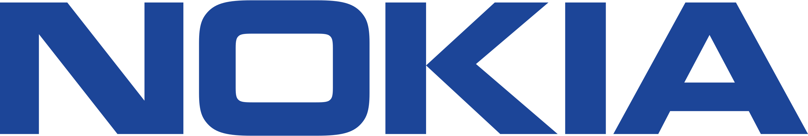
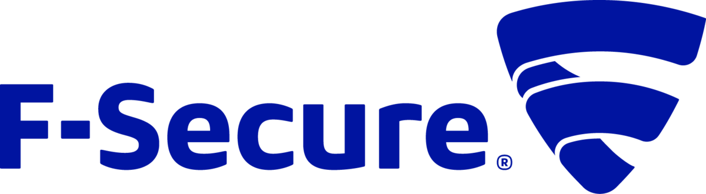

Dr James Uther
james.uther at gmail
I am a seasoned software engineer and architect with over 25 years of technical leadership spanning industry and academia. I excel at driving sustainable, high‑performance systems from pioneering serverless infrastructure to building ML‑powered data platforms. As Staff Engineer at Oliver Wyman, I lead projects like a large AI-backed financial signal platform (databricks/spark/AWS), and initiating transformation in everything from serverless infrastructure (AWS/Azure/Kubernetes/Terraform) to LLM usage. I hold a PhD in Computer Science.
Technical Skills
- Languages: Python, TypeScript most recently. Also significant experience in Java, Scala, Clojure, Kotlin, C++, JavaScript, Rust, Go, F#, C#
- Data & ML: Databricks, Spark, Polars, PyTorch, embeddings, transformers, MLOps, Google data platform.
- Cloud & DevOps: AWS, Azure, GCP, Terraform, various CI/CD systems, Kubernetes, serverless.
- Methodologies: Agile/Scrum, DSDM, .*Ops, CI/CD
Experience
Staff Engineer
Oliver Wyman | London, UK | Dec 2016 - now.
Architect & Tech Lead for Factiva Sentiment Signals, scoring the full Dow-Jones feed of English news daily using Databricks/Spark, and transformer‑based ML (huggingface/PyTorch). I transformed a laptop-scale demonstration to a robust product, introducing MLOps, CI/CD, 1000x performance improvement, financial & CO2 optimisation. Worked with Data Science team to build development platform to enable rapid and controlled future work.
A leader of the evolution from VMs to serverless; authored Terraform modules for AWS/Azure; contributed to a shared Kubernetes platform. (Terraform/Helm/AWS/Azure/Letsencrypt)
Improved the processing time (and compute cost) of a financial process in a bank by 800%. In another bank reduced a calculation on the full loan book from 24 hours to 30 mins, thus enabling the bank to meet data availability deadlines (RabbitMQ/Python)
Integrated sustainability as a core architectural principle; evangelised cloud carbon trackers and right‑sized infrastructure. Initiated a 'tech talk' series. Initiated a sustainability talk series. Frequent contributor to both.
Senior Developer
LShift | London, UK | Nov 2012 ‐ Dec 2016
At LShift, a company known for its high-caliber developers and expertise in delivering complex projects for blue-chip clients, I significantly expanded my technical skills and project delivery capabilities. Projects included agile, blue‑chip client projects using Clojure, Go, Scala, TypeScript, C#, F#, Kubernetes, Hadoop, Spark, ElasticSearch. Among many, I led the following;
- a UK pharmaceutical prescriptions visualisation on open NHS data (GCP/go).
- the extraction and modernisation of an AS400‑based City Guild system into an F# codebase; 3-4 order of magnitude performance improvement.
- Tech Lead/Architect etc on Enki — "A data sharing technology with security in its DNA."
I received formal training in DSDM agile project management. LShift provided a foundational understanding of reliably delivering complex projects, a crucial skill honed through practical application across diverse technical landscapes.
Research Fellow
University of Sydney | Sydney, Australia | May 2012 ‐ Nov 2012
In the Computer Human Adapted Interaction lab, which focusses on ubiquitous computing, e-learning, and health, I served as the lead architect and developer for Personis. This research system offered innovative methods for users to intelligently manage and utilise their online profiles, supporting Lifelong User Modelling.
In this period I implemented an OAuth integration with various 3rd party data sources, and mentored PhD students.

Staff Engineer
Nokia | Farnborough, UK | Feb 2005 ‐ Sep 2011
I held various roles, including Software Team Lead, Software Architect for multiple phone programs, and a member of a global architecture team focused on high-priority technology initiatives.
I initiated and successfully delivered a cultural change effort within the company aimed at reducing technical debt from a very large C++ codebase, showcasing understanding of software system health and ability to influence organisational priorities.
I played a role in ensuring the global software organisation achieved fluency in the Qt C++ development framework, including initiating training and mentoring sessions.
I participated in the development of several handset features, including the FM transmitter. This required building consensus and effective collaboration among marketing, UI, hardware, system, and application teams to ensure timely delivery within the product schedule. This cross-functional collaboration demonstrates ability to navigate complex organisational structures.
I was responsible for the architecture of product specific software for some product programs. Released products include N80 and N78. Contributions were also made to the N79, E72 and E6 among others.
Senior Consultant / Team Leader
Mobile Innovation | London, UK | Feb 2003 ‐ Feb 2005
Mobile Innovation was a leading user interface designer, product integrator and software developer for smartphones.
I built and led a team that developed the C++ UI framework for Nokia's first touch phones, the Series 90 and Series 80 Symbian platforms (Symbian C++). I was instrumental in convincing Nokia to subcontract further work to us.
I designed and developed UI unit testing and continuous integration systems for Symbian development (in Java and Python), and built an innovative parallel build system for Symbian that reduced builds from 24h to 4h.
My responsibilities included line management of a team and acting as a crucial communication link between the engineering and UI teams.

Senior Software Engineer/Researcher
F-Secure Corporation | Helsinki, Finland | Feb 2000 ‐ Feb 2003
I was a founding member of the Usability Working Group and served as a research project manager, leading usability-related research, future UI design, and the implementation of best practices within the company (Java/JavaScript/XUL).
As Java Competence Team Manager I built and maintained the company's Java expertise.
I was Architect and Team Leader for a large-scale server implemented in Java.
Software Development Manager
University of Sydney | Sydney, Australia | May 1994 ‐ Sep 1999
I was Architect and lead developer of a large-scale, world-leading e-learning platform within the Faculty of Medicine, utilising both client and server-side Internet technologies such as Java, Python, JavaScript, and SQL.
The initial hire for this project, I was responsible for the complete planning and implementation of the technology stack. This encompassed specifying, installing, and running servers (Netscape web stack/Sybase/mail/news/proxy/SMB/etc.) and developing custom software.
Key Skills
Software development, strategy, architecture & management; ability to influence and coordinate across expertise boundaries; development methods, including scrum/agile; UI & visualisation design; product prototyping and iteration; team leadership; proven ability to rapidly become productive in new technologies; contributed to and initiated open source projects.
Languages used range across object-oriented to functional, dynamic to static. Recently used languages include Python, and Typescript, with experience in Java, Scala, Clojure, C++, JavaScript, Rust, Go, F# and C#. I also have significant experience in infrastructure and DevOps (AWS/Azure/GCP, Kubernetes, Terraform, etc.)
Education
Professional Education
- Green Software for Practitioners (2024, 25)
- Certified in the Dynamic Systems Development Method (DSDM) Agile Project Management methodology
- Certified Sun Systems Administrator (1995)
University of Sydney
- PhD Computer Science — 1993 ‐ 2001 Thesis: On the Visualisation of Large User Models in Web Based Systems link Activities and Societies: Academic Board. Postgraduate Student Representative Association. Director, Student Housing Cooperative (STUCCO. history)
- MSc Computer Science — 1991 ‐ 1993 Research in architecture and user interfaces for educational software.
- BSc (Hons) Computer Science, Mathematics — 1988 ‐ 1991 Hons thesis in Digital Signal Processing
Publications
Blog/sundry
Academic work (see also Google Scholar)
Uther J. (2024). Putting Green Software Principles into Practice. LOCO2024: 1st International Workshop on Low Carbon Computing, December 2024. link
Uther M, Zipitria I, Uther J & Singh P. (2005). Mobile Adaptive CALL (MAC): A case-study in developing a mobile learning application for speech/audio language training. IEEE Workshop on Mobile Technologies in Education, November 2005. link
Uther M, Singh P, Zipitria I & Uther J. MAC: An adaptive, perception-based speech remediation s/w for mobile devices. Artificial Intelligence in Education (AIED) workshop on language tutoring, July 2005.
Uther M, Singht P & Uther J. Mobile adaptive CALL (MAC): an adaptive s/w for computer assisted language learning. IEEE Pervasive services in computing, July 2005. link
Apted T, Kay J, Lum A & Uther J. (2003). Visualisation of ontological inferences for user control of personal web agents. E Banissi, K Borner, C Chen, G Clapworthy, C Maple, A Lobben, C Moore, J Roberts, A Ursyn, Jian Zhang (eds), Proceedings of IV03-VSW, Information Visualisation - Semantic Web Visualisation, IEEE, 2003, 306 -- 311. link
Uther M, Uther J & Kay J. (2003). Visualising cohort comparisons with VlUM, Proceedings of CSCL, Computer Supported Co-operative Learning Conference, 114--116.
Lum A, Kay J, Apted T & Uther J. (2003). Visualisation of learning ontologies. Poster at AIED03.
Uther J & Kay J. (2003). VlUM, a Web-Based Visualion of Large User Models. Proceedings User Modeling, in Brusilovsky, P, A Corbett and F de Rosis (eds), Springer-Verlag in Lecture Notes in Artificial Intelligence (LNAI/LNCS), 198--202.
Uther J. (2001). On the visualisation of large user models in web based systems. Ph.D. Thesis. link
Uther J & Kay J. (1999). Describing and Viewing Large User Models. In D. Hawking and R. Wilkinson, Editors. Australian Document Computing Symposium, 1999, p 81-84.
Uther J & Kay J. (1998). Compact Display of Large User Models. Paper presented at the Sydney Visual Information Processing Meeting. link
Uther J & Taylor V. (1998). Fusing Dynamic and Static Web Sites. Paper presented at the Sydney Document Computing Symposium. link
Carlile S, Barnet S, Sefton A, Uther J. (1998). Medical problem based learning supported by intranet technology: a natural student centred approach. International Journal of Medical Informatics 50 (1998) 225-233. link
Uther, J (1997). It's Just A Web Site. Presentation given at the WWW7 Satellite Conference on Medical Education, University of Sydney.
Carlile S, Sefton A, Uther J, Barnet S. (1997). MedEdNet: A Faculty wide intranet to support an integrated medical curriculum at the University of Sydney. AusWeb97.
Uther, J (1994). A Useable Boxer Editor. Proceedings of OZCHI 94. p 53-58.
Uther, J (1993). An Editor for the BOXER Computing Environment. Proceedings of the Fifth International Conference on Human-Computer Interaction. Abridged Proceedings 1993 v.3 p.210
Uther, J (1993). A Boxer Architecture and Interface. Masters thesis.